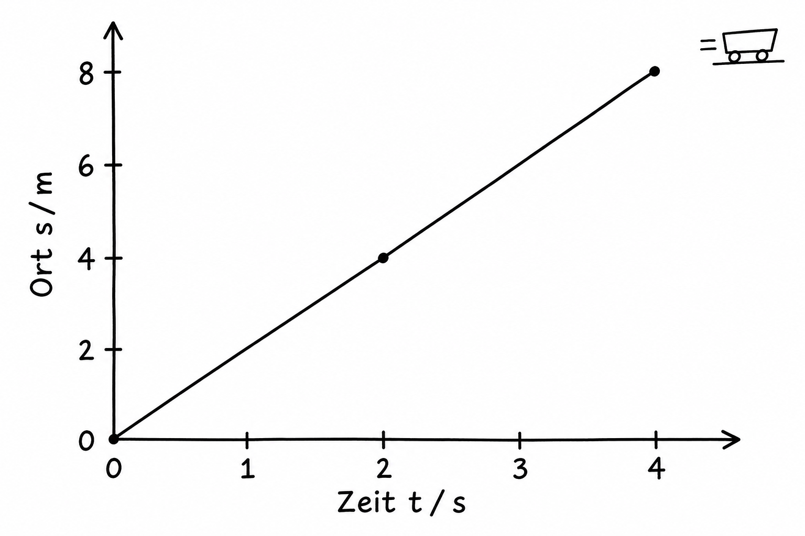
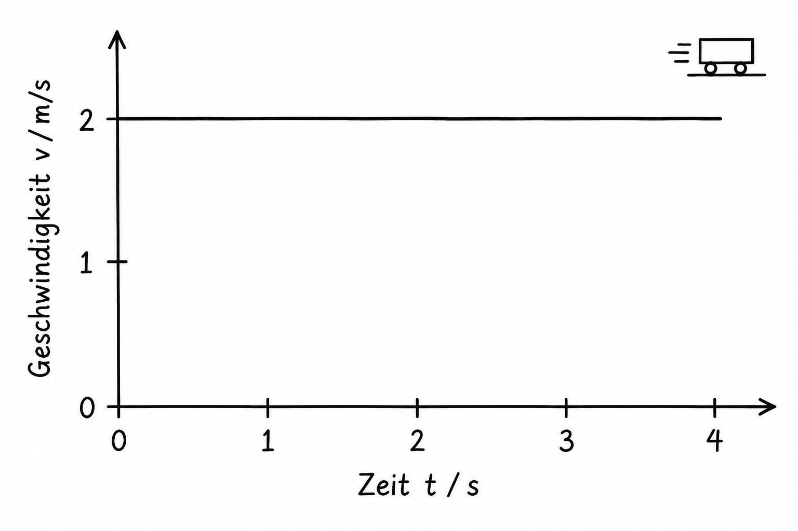
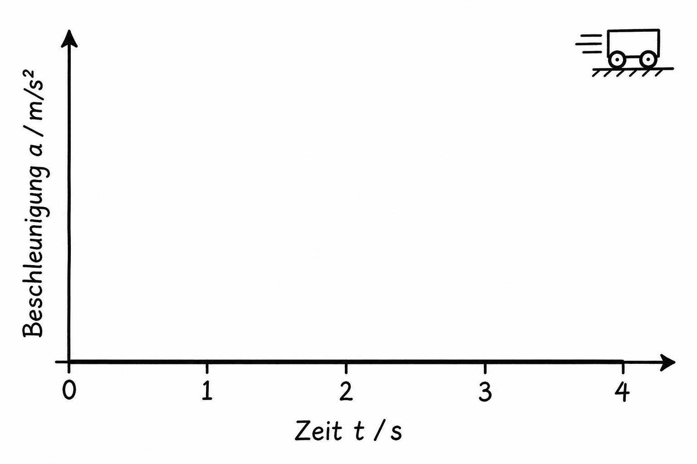

Mechanik · Bewegungen
Die gleichförmige Bewegung
Eine konstante Geschwindigkeit lässt sich in drei Diagrammen erkennen.
Bei einer gleichförmigen Bewegung bleibt die Geschwindigkeit gleich. Ein Körper legt deshalb in gleichen Zeitspannen gleich lange Wege zurück. Wir betrachten eine Bewegung entlang einer geraden Strecke in positiver Richtung.
1. Ort-Zeit-Diagramm: s(t)
Die waagerechte Achse zeigt die Zeit t in Sekunden. Die senkrechte Achse zeigt den Ort s in Metern, gemessen vom Startpunkt. Die Gerade steigt gleichmäßig: Pro Sekunde kommen 2 m dazu. Ihre Steigung ist die Geschwindigkeit. Hier gilt s(t) = 2 m/s · t.

2. Geschwindigkeit-Zeit-Diagramm: v(t)
Jetzt steht auf der senkrechten Achse die Geschwindigkeit v in Metern pro Sekunde. Die Linie ist waagerecht bei 2 m/s: Der Wagen wird weder schneller noch langsamer. Die Fläche zwischen der Linie und der Zeitachse entspricht dem zurückgelegten Weg. In 4 s sind das 2 m/s · 4 s = 8 m.

3. Beschleunigung-Zeit-Diagramm: a(t)
Die senkrechte Achse zeigt die Beschleunigung a in Metern pro Sekunde zum Quadrat. Beschleunigung beschreibt, wie sich die Geschwindigkeit ändert. Weil sie hier gleich bleibt, gilt zu jeder Zeit a(t) = 0 m/s². Die Linie liegt auf der Zeitachse.
